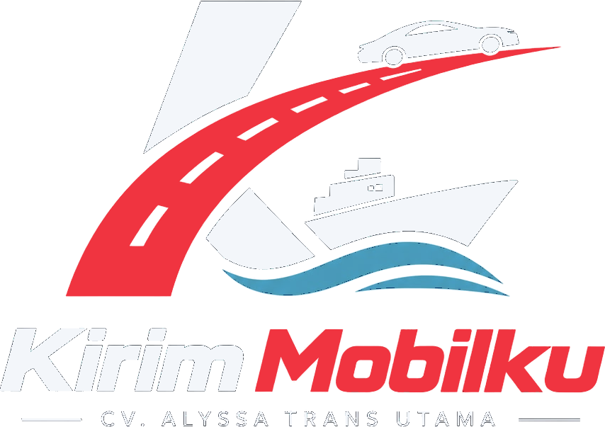

Kirim Mobil
Pengiriman mobil dengan berbagai pilihan armada sesuai kebutuhan dan anggaran.
Darat · Laut
Jasa pengiriman kendaraan dan alat berat melalui darat dan laut, ke seluruh Indonesia.
Pengiriman kendaraan sering menjadi proses yang membingungkan dan penuh kekhawatiran. Di Kirim Mobilku, kami hadir untuk memberikan ketenangan pikiran bagi setiap pemilik kendaraan saat memindahkan aset berharganya.
Dengan pengalaman melayani berbagai rute di Indonesia, kami memahami tantangan logistik di negara kepulauan, dan menjawabnya dengan standar operasional yang ketat serta komunikasi yang proaktif.
Pengiriman mobil dengan berbagai pilihan armada sesuai kebutuhan dan anggaran.
Darat · LautPengiriman motor, dari bebek dan matic hingga sport dan moge, dengan packing standar.
Darat · LautDerek eksklusif: satu truk untuk satu kendaraan, cocok untuk mobil mewah atau klasik.
Door-to-doorTruk transporter untuk beberapa unit sekaligus, solusi ekonomis antarkota dalam satu pulau.
Hingga 5 unitKendaraan dikemudikan driver profesional kami, cocok untuk kebutuhan yang mendesak.
Rute daratKombinasi darat dan laut melalui kapal RoRo, Pelni, atau kargo ke seluruh Indonesia.
RoRo · Pelni · KargoPengangkutan alat berat dengan truk yang memuat sendiri, tanpa crane di lokasi.
Hingga 20 tonTrailer lantai rendah untuk alat berat besar dan mesin industri.
Hingga 30 tonBeberapa kendaraan dalam satu armada.
Penanganan eksklusif untuk satu unit.
Kendaraan diikat aman di dek kapal.
Dikemudikan driver profesional.
Jangkauan melalui jaringan operasional dan mitra pengangkut.
Menghubungkan Jawa, Sumatera, Kalimantan, Sulawesi, hingga Papua.
Hubungi kami via WhatsApp atau isi formulir untuk mendapatkan penawaran.
Konsultasikan dan pilih metode yang paling sesuai dengan kebutuhan Anda.
Kondisi kendaraan dicek bersama sebelum proses pengiriman dimulai.
Kendaraan dalam perjalanan, status dapat dipantau secara berkala.
Kendaraan tiba di tujuan dan diserahterimakan dengan pengecekan akhir bersama.
Setiap pesanan mendapat nomor resi. Masukkan di halaman Tracking untuk melihat status terbaru kendaraan Anda, kapan saja.
STNK dan BPKB asli atau fotokopi, tergantung rute. Untuk motor, sertakan STNK dan kunci kontak.
Kendaraan diinspeksi bersama dan didokumentasikan sebelum dan sesudah pengiriman.
Kendaraan diikat sesuai standar di truk maupun di dek kapal agar tidak bergeser selama perjalanan.
Detail biaya, metode, dan jadwal dikonfirmasi di awal dalam penawaran resmi.
Ceritakan rute dan kendaraan Anda. Tim kami menghubungi Anda untuk mengonfirmasi metode, jadwal, dan tarif.
Jl. Sungai Bambu No. 20, RT 004/RW 006, Kel. Sungai Bambu, Kec. Tanjung Priok, Jakarta Utara, DKI Jakarta 14330
Kirim Mobilku
CV. Alyssa Trans Utama
alyssalogistik.co.id